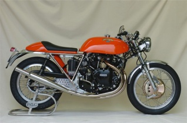
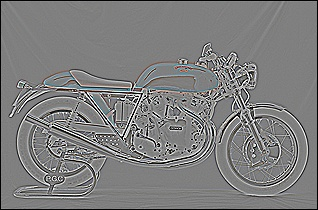
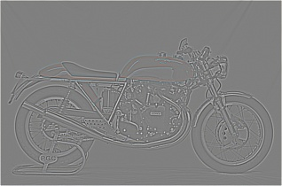
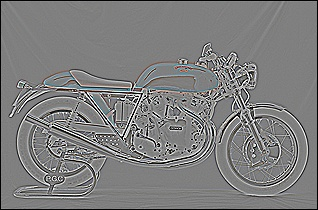
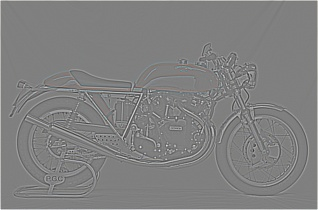
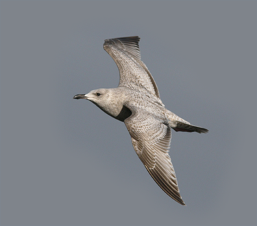
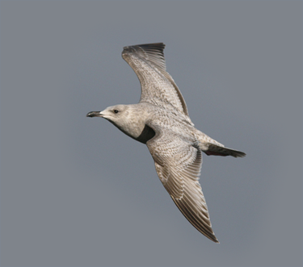
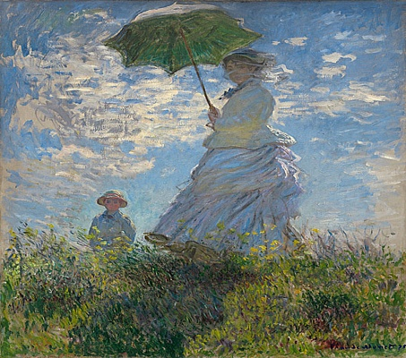

Project 1: Image Filtering and Hybrid Images

'Tri-brid' Image from vanGogh's Style and 'Hybrid' Cat/Dog
Imagine World-Famous Artists like Vincent vanGogh(1853-1890), Pablo Picasso(1881-1973) and Leonardo daVinci(1452-1519) Ire sitting together at Georgia Tech, and listening to Prof. Hays' Computer Vision course with you.
After Two Ieks, they had to submit the First class assignment about using Gaussian Filters to create some 'Hybird Images'. Unfortunatly, None of them are familiar with Computer or MATLAB. What will they do if they Ire permitted to paint their 'Hybird' Images?
This assignment is organized below:
- Part 1: Build My_Imfilter and Compared with MATLAB's Imfilter.
- Part 2: Implement 'Hybird' Images by Gaussian High/Low-Pass Filter.
- Part 3: Automatically Searching for Optimal Parameters.
- Part 4: Mix VanGogh/Picasso/DaVincis' Style to Create 'Tri-brid' Images.
Part 1: Build My_Imfilter and Compared with MATLAB's
In Part 1: We are assignemted to implement a convolution function named my_imfilter(). This function can be divided into two parts: Zero-Padding and Convolution:
Part 1.1 Code Example: Zeros+Mapping vs Padarray
In Zero-Padding Part, if you choose MATLAB built-in function zeros and mapping all data from original image, it takes 0.016 sec.
[m,n]=size(filter);
[x,y,z]=size(image);
%Part 1.1.1 Example code:Zeros+Mapping
%Zeros%
image_padding=zeros(x+m-1,y+n-1,z);
%Mapping%
for a=1:x
for b=1:y
for c=1:z
image_padding(a+(m-1)/2,b+(n-1)/2,c)=image(a,b,c);
end
end
end
However, using Padarray takes only 0.012 sec ,which is +25% more faster.
%Part 1.1.2 Example code:Padarray
image_padding=padarray(image,[(m-1)/2,(n-1)/2]);
Part 1.2 Code Example: Brute Force
In Convolution Part, the most intuitive way is Brute Force. Using five "for" loop assigning Original Image's W, H,and Color and Filter's W and H, we can implement My_Imfilter with Complexity O(n^5) and takes 0.082 sec.
%Part 1.2.1 Example code:Brute Force
for a=1:x
for b=1:y
for c=1:z
for d=1:m
for e=1:n
output(a,b,c)=output(a,b,c)+image_padding(a+d-1,b+e-1,c)*filter(d,e);
end
end
end
end
end
Unfortunately, Brute Force takes too long to finish all image hybriding and much sloIr than built-in function imfilter(). So, I use SVD function to solve this problem. if we define 2 vectors h1 and h2, where h1xh2=filter. For Rank(filter) equals to 1,we can reduce convolution from O(nxm) to O(nx1)+O(1xm). It's about +10% faster.
%Part 1.2.2 Example code:Dimension Reduction
[U,S,V]=svd(filter);
R=rank(S);
if R==1
h1=U(:,1)*sqrt(S(1,1));
h2=sqrt(S(1,1))*transpose(V(:,1));
output=my_imfilter(my_imfilter(image,h1),h2);
else
output=my_imfilter(image,filter);
endPart 1.3 Filtered Results:
These are 6 filters ordered in identity filter(5x5), blur filter(5x5), large blur filter(25x25), sobel filter(5x5), laplacian filter(5x5), and high-pass filter(5x5). Large blur filter is resized. Normalization([0,1]) and Translation(+0.5) are used.

|

|

|


 



|

|


|
Part 2: Implement 'Hybird' Images by Gaussian High/Low-Pass Filter
In Part 2, we are assigned to implement 'Hybrid' images. By adding images after high-pass and low-pass Gaussian filters, we can create our hybrid images. In these images, we should observe high-frequency elements while the image is close, and low-frequency elements while it's far away. Under these circumstances, we can judge the betterness by the eye.
Part 2.1: Analyze Cut-Off Frequency in High/Low-Pass Gaussian Filters.
Sweep Cut-Off Frequency from 2 to 10 in High-Pass Image: if we observe high-pass filters' height from left to right, we observe there peaks are gradually higher. The more the filter is condensed, the sharper the image will become. Then, we can see the cat's face on the second row is gradually appearing. This is because we gradually remove low-frequency elements from the original image and make its edge more sharper. When cut-off frequency is selected high enough, we can easily recognize it's a cat face.
Sweep Cut-Off Frequency from 2 to 10 in Low-Pass Image: On the other hand, if we observe how cut-off frequencies influence the low-pass filter while increasing, on the first row, we notice the central part is gradually decreasing. while increasing the cut-off frequency, what we actually do is smoothing the sharpness on the dog's face. This is equavilent to average or blur our original image. After removing the high-frequency parts, we make this image more ambiguous. When cut-off frequency is selected high enough, we can barely notice the dog face.
Part 2.2: Create 'Hybrid' Image from Mixing High/Low-Frequency Images.
After mixing high-frequency and low-frequency images together, we can implement the 'Hybrid' image. Hybrid image will appear high-frequency image when it is large and low-frequency image when it is small. This is because while we watching the 'Hybrid' image close, we are actually use image's sharpness to recognize the patterns of the image. When our eyes notice some sharp edges combining with some smooth edges, we will intuitively ignore the smooth part and seen it as some background or trivial information. On the other hand, after resizing our hybird image, what we actually do is using interpolation to recalculate pixels in our image. This will eventually smooth or dispose the high-frequency elements and make the low-frequency edges become sharp and appear again.
The following table are 'Hybrid' Images mixed by different cut-off frequencies. Cut-off frequencies are swept from 2 to 10 in both directions. From left to right is increasing the high-pss filter's cut-off frequency as we did in the high-pass Sweeping. From top to bottom is increasing the low-pass filter's cut-off frequency. When we want to select the Optimal Hybrid image by our eyes, we need to consider 2 scenario, which is when the hybrid is large and when it is small.
Part 2.2.1: Visualize High-Frequency Image on Cat/Dogs' Hybird Image.
In this table is to demonstrate the implementation result of Hybrid images with resolution 361x410x3. we can observe that on the first row, we can gradually observe the cat's face, while the dog's face is still clear. It is because the cut-off frequency is not high enough, which is 2, so we can still catch the sharp edges from the low-frequency image.

|

|
Part 2.2.2: Visualize Low-Frequency Image on Cat and Dogs' Hybird Image.
In this table, I implement a Hybrid image with resolution 23x26x3. More Accuratley, By reducing the original hybrid size into 1/16, we can more easily to visualize our hybrid images' performance. In this scale, we can notice there are basically all dog faces without high-frequency components. The most important thing is to select the optimal cut-off frequency which is the clearest in this small scale.

|
Part 2.2 Code Example: Sweep Cut-Off Fequency
%Part 2.2 Example code:Sweep Cut-Off Frequency
for i=1:5
for j=1:5
filter_low = fspecial('Gaussian', i*4*2+1, 2*i);
filter_high = fspecial('Gaussian', j*4*2+1, 2*j);
low_frequencies = imfilter(image1, filter_low);
high_frequencies = image2-imfilter(image2, filter_high);
hybrid_image = low_frequencies+high_frequencies;
end
end
Part 3: Automatically Searching for Optimal Parameters by Euclidean Distance
In Part 3, we want to implement an algorithm to automatically distinguish the best cut-off frequencies to our hybrid image. The idea is intuitive. Because after mixing two images, we will not have scenarios like rotation, distortion or noice. In this case, SIFT or the other transformations are too tedious in our application. All we need to do is to compare the Euclidean Distance betIen hybrid and the original image under their ultimate size, which is 361x410 for high-frequency image and 23x26 for low-frequency image. While Euclidean Distance is small, we can say these 2 images are similar to each other and vice versa. This can help us easily decide the goodness of among our hybrid images. For this purpose, we need to define 2 parameters named S1 and S2 to represent the similarity betIen High-Frequency and Hybrid images while it is large, and similarity betIen Low-Frequency and Hybrid images while it is small.
However, if we only consider similarity betIen the original and hybrid images, we could only select images which are both clear no matter it is large or small. To solve this problem, we need to define 2 additional parameters U1 and U2 to help our algorithm understand how un-similar betIen Low-Frequency and Hybrid images while its large, and how unsimilar betIen High-Frequency and Hybrid images while its small. After Linear Combination betIen these 4 parameters, we can easily judge the goodness of our hybrid images.
Part 3.1 Code Example:
Part 3.1.1 Code Example: Change Vector to 1-D Tensor
%Part 3.1.1 Example code:Reshape to Tensor and Calculate Euclidean Distance
Reshape_image1=reshape(image1,[1,numel(image1)]); %Change to Tensor for PDIST2 Input%
Reshape_image2=reshape(image2,[1,numel(image2)]);
Reshape_hybrid=reshape(hybrid_image,[1,numel(hybrid_image)]);
S2(i,j)=pdist2(Reshape_image2,Reshape_hybrid,'euclidean'); %Calculate High-Freq. Similarity%
U2(i,j)=pdist2(Reshape_image1,Reshape_hybrid,'euclidean');
Small_image1=imresize(Reshape_image1,0.5^4,'bilinear'); %Reduce size to 1/16%
Small_image2=imresize(Reshape_image2,0.5^4,'bilinear');
Small_hybrid=imresize(Reshape_hybrid,0.5^4,'bilinear');
S1(i,j)=pdist2(Small_image1,Small_hybrid,'euclidean'); %Calculate Low-Freq. Similarity%
U1(i,j)=pdist2(Small_image2,Small_hybrid,'euclidean');
Part 3.1.2 Code Example: Normalization
%Part 3.1.2 Example code:Normalization and Linear Combination
S2_min=min(min(S2)); %Get Min for Centralize to Zero%
Y2_min=min(min(Y2));
S1_min=min(min(S1));
Y1_min=min(min(Y1));
S2_norm=max(max(S2-S2_min)); %Get Max for Range from 0 to 1%
Y2_norm=max(max(Y2-Y2_min));
S1_norm=max(max(S1-S1_min));
Y1_norm=max(max(Y1-Y1_min));
S2_R=(S2-S2_min)/S2_norm; %Normalization%
Y2_R=(Y2-Y2_min)/Y2_norm;
S1_R=(S1-S1_min)/S1_norm;
Y1_R=(Y1-Y1_min)/Y1_norm;
S_total=S1_R+S2_R-Y1_R-Y2_R; %Calculate Total Distance%
Part 3.1.3 Code Example: Optimization
%Part 3.1.3 Example code: Searching for Minimum Euclidean Distance
S_min=min(min(S_total)); %Setup Optimal Point:Minimum Euclidean Distance%
for i=1:5
for j=1:5
if S_total(i,j)==S_min
filter_low = fspecial('Gaussian', i*4*2+1, 2*i);
filter_high = fspecial('Gaussian', j*4*2+1, 2*j);
low_frequencies = imfilter(image1, filter_low);
high_frequencies = image2-imfilter(image2, filter_high);
hybrid_image = low_frequencies+high_frequencies;
vis = vis_hybrid_image(hybrid_image);
imwrite(vis, sprintf('YOUR_PATH/Hybrid_VIS_%d_%d.jpg',i,j), 'quality', 95);
end
end
end
Part 3.2: 'Hybrid' Images from Automatically Searching Algorithm


|


|


|


|
 

|
Part 4: Mix World-Famous Style to Create 'Tri-brid' Image
In Part 4, I want to implement a Neural Network to Mix World-Famous Painter's Style into our Hybird Image. This idea is from 2015's CVPR paper "A Neural Algorithm of Artistic Style" by Leon A. Gatys, et al. at CIN, Tübingen, Germany. This concept can easily understood by the following picture from the original paper. The pigure extract Artistic Style from Vincent vanGogh's famous painting "The Starry Night" and reconstruct this style on the selected picture.
The paper's structure is based on VGG19 (pre-trianed on ImageNet) without fully-connected layers, but only preserve 16 convolution and 5 pooling layers. Change VGG19's original max pooling layers to average pooling for visual performance. Then, this paper uses L2-nomr to define content loss between original image and generated image, and style loss between original art work and generated image. In style loss, this paper uses Gram matrix to define image's feature. After adding content loss and style loss together, this paper defines their total loss function. The following pictures are demonstrations from the original CVPR paper.
However, from observing the last two pictures E and F, we can easily notice that they are too ambiguous(have too much style) to be recognized as the riverside scene. The main reason is the original CVPR paper is focusing on mixing style and content together. On the other hand, if we want to implement a "Tri-Brid" Image, we need to consider the "Preservation" of our hybrid image and how to add styles on it without decreasing its hybrid nature.
To solve this problem, we need to modify some assumptions from this CVPR paper. First of all, we need to emphasis the importance of our hybrid image. Instead of merely adding style into hybrid images, we need to wisely balance the style and our high/low frequencies. The most intuitive way is to increase the content's weighting. By increasing the context's weighting, we can easily preserve our hybrid image. Specifically, in our hybrid images, the content weights (after calculate) are about 10 times larger than the style weights of the art works. In this case, setting up content weight parameter to 0.05, which is far from paper's suggestion 0.001~0.0001 can guarantee a better result.
Secondly, I extract features from all convolution layers. Unlike the original paper manually selecting features from convolution layers, I select all convolution layers and add them together, which is far more convinent if we have a lot of images. In the end, the L2-norm in total loss function is modified into L_1.25-norm for practical usage.

|


|
Reference:
[1] François Chollet's Twitter (Author of Keras): https://twitter.com/fchollet/status/686631033085677568
[2] François Chollet's GitHub: https://github.com/fchollet/keras/blob/master/examples/neural_style_transfer.py
[3] VGG19 on Keras: https://gist.github.com/baraldilorenzo/8d096f48a1be4a2d660d
[4] CVPR Paper:"A Neural Algorithm of Artistic Style" http://arxiv.org/abs/1508.06576
[5] Computer Vision Website by James Hays: https://www.cc.gatech.edu/~hays/compvision/proj1/